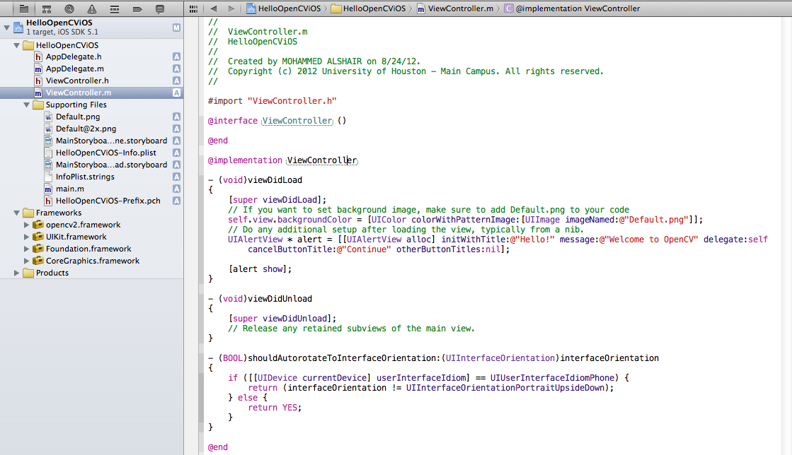

OpenCV iOS Hello
Goal
In this tutorial we will learn how to:
- Link OpenCV framework with Xcode
- How to write simple Hello World application using OpenCV and Xcode.
Linking OpenCV iOS
Follow this step by step guide to link OpenCV to iOS.
- Create a new XCode project.
- Now we need to link opencv2.framework with Xcode. Select the project Navigator in the left hand panel and click on project name.
- Under the TARGETS click on Build Phases. Expand Link Binary With Libraries option.
- Click on Add others and go to directory where opencv2.framework is located and click open
- Now you can start writing your application.

Hello OpenCV iOS Application
Now we will learn how to write a simple Hello World Application in Xcode using OpenCV.
Link your project with OpenCV as shown in previous section.
Open the file named NameOfProject-Prefix.pch ( replace NameOfProject with name of your project) and add the following lines of code.
#ifdef __cplusplus #import <opencv2/opencv.hpp> #endif

Add the following lines of code to viewDidLoad method in ViewController.m.
UIAlertView * alert = [[UIAlertView alloc] initWithTitle:@"Hello!" message:@"Welcome to OpenCV" delegate:self cancelButtonTitle:@"Continue" otherButtonTitles:nil]; [alert show];
You are good to run the project.
Output

Changes for XCode5+ and iOS8+
With the newer XCode and iOS versions you need to watch out for some specific details
- The *.m file in your project should be renamed to *.mm.
- You have to manually include AssetsLibrary.framework into your project, which is not done anymore by default.